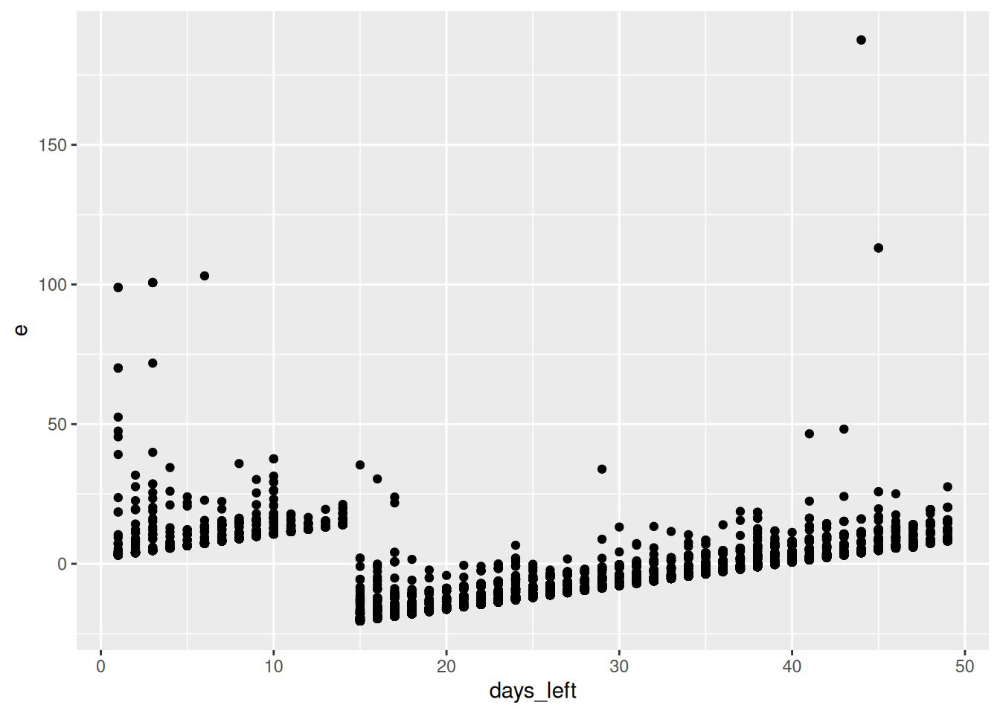

df <- read.csv("delhi_mumbai_flights.csv")
cor(df$days_left, df$price)[1] -0.6908118
You work for an airline considering opening a new route between the cities Dehli and Mumbai in India. You have been tasked with analyzing flight pricing among rival airlines on this route. You go to the websites of all the airlines that fly direct between those two cities and take note of the price of an economy class ticket for different dates: if you were to fly tomorrow, 2 days later, 3 days later and so on, until 49 days later.
You also take note of the airline, source city and destination city. You put all of these data into a spreadsheet. Here is a link to download the spreadsheet you created: dehli_mumbai_flights.csv.
The definitions of all the variables are as follows:
flight: The flight number.airline: The name of the airline service running the flight.source_city: The city the flight is leaving from (either Dehli or Mumbai).destination_city: The city the flight is flying to (either Dehli or Mumbai).days_left: The number of days until the flight departs. If days_left equals 1, it means the flight is leaving tomorrow. If it equals 2, it means the flight is leaving in 2 days, etc.price: The price of the flight converted to euro.Your supervisor asks you to answer the following questions using your data.
What is the sample correlation between days_left and price?
Answer:
df <- read.csv("delhi_mumbai_flights.csv")
cor(df$days_left, df$price)[1] -0.6908118Estimate a linear regression model with price as the dependent variable and days_left as the independent variable.
If you estimated the model correctly, you should have an estimated intercept of 56.03504.
m1 <- lm(price ~ days_left, data = df)
summary(m1)
Call:
lm(formula = price ~ days_left, data = df)
Residuals:
Min 1Q Median 3Q Max
-20.460 -8.810 0.598 8.037 187.558
Coefficients:
Estimate Std. Error t value Pr(>|t|)
(Intercept) 56.03504 0.35869 156.22 <2e-16 ***
days_left -0.84233 0.01226 -68.69 <2e-16 ***
---
Signif. codes: 0 '***' 0.001 '**' 0.01 '*' 0.05 '.' 0.1 ' ' 1
Residual standard error: 11.88 on 5168 degrees of freedom
Multiple R-squared: 0.4772, Adjusted R-squared: 0.4771
F-statistic: 4718 on 1 and 5168 DF, p-value: < 2.2e-16What is the sample regression slope?
Answer:
coef(m1)[2] days_left
-0.8423306 Use the model to estimate the mean price of flights departing in 50 days (i.e. days_left equal to 50).
Also obtain a 95% confidence interval for the mean price of flights departing in 50 days.
Answer:
df_p <- data.frame(days_left = 50)
predict(m1, df_p, interval = "confidence", level = 0.95) fit lwr upr
1 13.91851 13.25596 14.58106The prediction is under fit, the lower bound of the confidence interval is under lwr, and the upper bound of the confidence interval is under upr.
Plot the residuals (on the vertical axis) against days_left (on the horizontal axis). Choose the answer below which best interprets what this plot says about our model assumptions.
days_left is less than 15. This evidence suggests that the assumption \mathbb{E}[\varepsilon_i|x_i]=0 for all x_i is satisfied.days_left is less than 15. This evidence suggests that the assumption \mathbb{E}[\varepsilon_i|x_i]=0 for all x_i is satisfied.days_left is less than 15. This evidence suggests that the assumption \mathbb{E}[\varepsilon_i|x_i]=0 for all x_i is violated.days_left is less than 15. This evidence suggests that the assumption \mathbb{E}[\varepsilon_i|x_i]=0 for all x_i is violated.Answer:
df$e <- m1$residuals
ggplot(df, aes(days_left, e)) + geom_point()
All residuals are positive when days_left is less than 15. This evidence suggests that the assumption \mathbb{E}[\varepsilon_i|x_i]=0 for all x_i is violated.
Perform a formal test for heteroskedasticity by regressing the square of the residuals on days_left.
Use a 5% significance level.
In this test, the null hypothesis is that the model exhibits which of the following:
What is the p-value from this test? \underline{\hspace{20mm}}
What is the conclusion? Choose one of the answers below:
Answer:
df$e2 <- m1$residuals^2
m_aux <- lm(e2 ~ days_left, data = df)
coef(summary(m_aux))["days_left", "Pr(>|t|)"][1] 0.00008592984A scatter plot of days_left and price is shown below:

Based on this, your supervisor suggests an alternative way of modeling price as a function of days_left. Your supervisor suggests to use a dummy variable that equals 1 if the flight is within 14 days (i.e. days_left \leq 14) and 0 if the flight is more than 14 days away (i.e. days_left >14).
Create this variable with the command:
df$within14 <- df$days_left <= 14Use this variable to estimate a linear regression model with price as the dependent variable and within14 as the independent variable.
If you estimated the model correctly, your estimated intercept should equal 25.5823.
df$within14 <- df$days_left <= 14
m2 <- lm(price ~ within14, data = df)
summary(m2)
Call:
lm(formula = price ~ within14, data = df)
Residuals:
Min 1Q Median 3Q Max
-3.212 -2.052 -1.932 0.898 180.948
Coefficients:
Estimate Std. Error t value Pr(>|t|)
(Intercept) 25.5823 0.1077 237.5 <2e-16 ***
within14TRUE 34.7598 0.2168 160.4 <2e-16 ***
---
Signif. codes: 0 '***' 0.001 '**' 0.01 '*' 0.05 '.' 0.1 ' ' 1
Residual standard error: 6.722 on 5168 degrees of freedom
Multiple R-squared: 0.8326, Adjusted R-squared: 0.8326
F-statistic: 2.571e+04 on 1 and 5168 DF, p-value: < 2.2e-16Compare the sum of squares due to regression (SSR) between Model 1 (using days_left) and Model 2 (using within14). Choose the answer below which best describes what you learn from this.
Answer:
m0 <- lm(price ~ 1, data = df)
anova(m0, m1)Analysis of Variance Table
Model 1: price ~ 1
Model 2: price ~ days_left
Res.Df RSS Df Sum of Sq F Pr(>F)
1 5169 1395330
2 5168 729449 1 665881 4717.6 < 2.2e-16 ***
---
Signif. codes: 0 '***' 0.001 '**' 0.01 '*' 0.05 '.' 0.1 ' ' 1anova(m0, m2)Analysis of Variance Table
Model 1: price ~ 1
Model 2: price ~ within14
Res.Df RSS Df Sum of Sq F Pr(>F)
1 5169 1395330
2 5168 233510 1 1161820 25713 < 2.2e-16 ***
---
Signif. codes: 0 '***' 0.001 '**' 0.01 '*' 0.05 '.' 0.1 ' ' 1Model 2 has a higher SSR than Model 1 and is therefore preferred.
Obtain a 95% confidence interval for the coefficient in front of the variable within14. Report the lower and upper bound.
Answer:
confint(m2, level = 0.95) 2.5 % 97.5 %
(Intercept) 25.37107 25.79348
within14TRUE 34.33482 35.18474The lower bound is 34.33482 and the upper bound is 35.18474.
Your supervisor is also interested in the average price differences between airlines.
To study this, estimate a linear regression model with price as the dependent variable and dummy variables for the airlines as the independent variables. Use "Air_India" as the base category, so the included variables should be dummy variables for "AirAsia", "Go_FIRST", "Indigo", "SpiceJet" and "Vistara".
In R, you can estimate this model using the airline variable as is (i.e. using the formula price ~ airline). It is not necessary to create the individual dummy variables. "Air_India" will automatically be chosen as the base category using this approach.
If you estimated the model correctly, the estimated regression intercept should equal 33.6899.
m3 <- lm(price ~ airline, data = df)
summary(m3)
Call:
lm(formula = price ~ airline, data = df)
Residuals:
Min 1Q Median 3Q Max
-14.914 -10.963 -7.797 13.400 171.643
Coefficients:
Estimate Std. Error t value Pr(>|t|)
(Intercept) 33.6899 0.6502 51.813 < 2e-16 ***
airlineAirAsia 0.2583 1.3884 0.186 0.852394
airlineGO_FIRST -2.9532 0.8189 -3.606 0.000313 ***
airlineIndigo 1.1968 0.7837 1.527 0.126772
airlineSpiceJet 3.5940 0.9859 3.645 0.000270 ***
airlineVistara 1.5533 0.7820 1.986 0.047062 *
---
Signif. codes: 0 '***' 0.001 '**' 0.01 '*' 0.05 '.' 0.1 ' ' 1
Residual standard error: 16.32 on 5164 degrees of freedom
Multiple R-squared: 0.01424, Adjusted R-squared: 0.01328
F-statistic: 14.92 on 5 and 5164 DF, p-value: 0.00000000000001447The estimated intercept of 33.6899 means that the average price of which airline equal to €33.68?
Answer:
This is the average price of the base category, which is Air India.
According to the model, what is the average price of SpiceJet flights in the data?
Answer:
We add the estimated intercept and the coefficient on SpiceJet:
coef(m3)[1] + coef(m3)[5](Intercept)
37.2839 Use the model to test the following claim at the 5% level:
“GO FIRST flights are more than €2 cheaper compared to Air India”
Perform this test by answering the questions below.
Note: If you estimated your regression model using the variable airline as is, and assigned it to the name m3, then you can extract the coefficient for GO FIRST with the following R command:
b_2 <- coef(summary(m3))["airlineGO_FIRST", "Estimate"]What is the null hypothesis? \beta_2 </\leq/>/\geq/=/\neq \underline{\hspace{20mm}} (choose one comparison operator and fill in a value in the blank).
What is the alternative hypothesis? \beta_2 </\leq/>/\geq/=/\neq \underline{\hspace{20mm}} (choose one comparison operator and fill in a value in the blank).
Under the null hypothesis, the test statistic T=(B_2-b)/S_{B_2}, where b is the hinge, follows a t distribution with how many degrees of freedom? \underline{\hspace{20mm}}
What is the value of the test statistic? \underline{\hspace{20mm}}
What is the associated p-value? \underline{\hspace{20mm}}
What is your conclusion? Choose an option below:
Answer:
b_2 <- coef(summary(m3))["airlineGO_FIRST", "Estimate"]
s_b_2 <- coef(summary(m3))["airlineGO_FIRST", "Std. Error"]
t <- (b_2 + 2) / s_b_2
t[1] -1.163996pt(t, m3$df.residual)[1] 0.1222397Estimate a model explaining price with the within14 dummy variable AND dummy variables for the airlines (using "Air_India" as the base category).
Like with the previous model, you can add these airline dummies to your model using the airline variable as is (which also automatically chooses "Air_India" as the base category). You simply use the formula price ~ within14 + airline.
If you estimated the model correctly your estimated intercept should equal 24.2944.
m4 <- lm(price ~ within14 + airline, data = df)
print(summary(m4))
Call:
lm(formula = price ~ within14 + airline, data = df)
Residuals:
Min 1Q Median 3Q Max
-4.368 -2.543 -0.458 0.466 179.222
Coefficients:
Estimate Std. Error t value Pr(>|t|)
(Intercept) 24.2944 0.2685 90.466 < 2e-16 ***
within14TRUE 34.8186 0.2136 163.011 < 2e-16 ***
airlineAirAsia 2.3754 0.5602 4.240 0.0000227248 ***
airlineGO_FIRST -0.5214 0.3307 -1.577 0.115
airlineIndigo 3.0133 0.3163 9.526 < 2e-16 ***
airlineSpiceJet 0.2107 0.3982 0.529 0.597
airlineVistara 1.7197 0.3155 5.452 0.0000000523 ***
---
Signif. codes: 0 '***' 0.001 '**' 0.01 '*' 0.05 '.' 0.1 ' ' 1
Residual standard error: 6.583 on 5163 degrees of freedom
Multiple R-squared: 0.8396, Adjusted R-squared: 0.8394
F-statistic: 4505 on 6 and 5163 DF, p-value: < 2.2e-16Test the joint usefulness of the airline dummies in this model (variables 2-6) at the 5% level.
Choose one of the options in italics and fill in the blanks.
The test statistic is of the form: \frac{\frac{SSE_r - a}{g-k}}{\frac{a}{n-k-1}}
What is the numeric value of a in the test? \rule{1cm}{0.15mm}
What is the numeric value of the test statistic? \rule{1cm}{0.15mm}
What is the critical value? \rule{1cm}{0.15mm}
Which of the 4 options below is the correct conclusion from the test?
Answer:
We can perform the partial F test by using the anova() function with the reduced model (price explained by within14 only, which is model m2 above) and the complete model (price explained by within14 and airline, which is model m4 above).
anova(m2, m4)Analysis of Variance Table
Model 1: price ~ within14
Model 2: price ~ within14 + airline
Res.Df RSS Df Sum of Sq F Pr(>F)
1 5168 233510
2 5163 223772 5 9738.7 44.939 < 2.2e-16 ***
---
Signif. codes: 0 '***' 0.001 '**' 0.01 '*' 0.05 '.' 0.1 ' ' 1We now have everything to answer the questions:
anova() output.qf(0.95, 5, 5163)[1] 2.215831Estimate a regression model explaining price with:
days_left is less than or equal to 14 and 0 otherwise.source_city is Mumbai and 0 otherwise.Note: Using the variable source_city as is will automatically create a dummy variable that equals 1 if the source city is Mumbai.
If you estimated the model correctly, your estimated regression intercept should equal 26.2802.
m5 <- lm(price ~ within14 * source_city, data = df)
summary(m5)
Call:
lm(formula = price ~ within14 * source_city, data = df)
Residuals:
Min 1Q Median 3Q Max
-3.910 -2.171 -1.945 0.200 181.645
Coefficients:
Estimate Std. Error t value Pr(>|t|)
(Intercept) 26.2802 0.1518 173.121 < 2e-16 ***
within14TRUE 34.3006 0.3038 112.891 < 2e-16 ***
source_cityMumbai -1.3947 0.2146 -6.499 0.0000000000883 ***
within14TRUE:source_cityMumbai 0.9109 0.4318 2.109 0.035 *
---
Signif. codes: 0 '***' 0.001 '**' 0.01 '*' 0.05 '.' 0.1 ' ' 1
Residual standard error: 6.695 on 5166 degrees of freedom
Multiple R-squared: 0.8341, Adjusted R-squared: 0.834
F-statistic: 8655 on 3 and 5166 DF, p-value: < 2.2e-16Which variables are individually statistically significant at the 1% level?
Answer:
We can check the p-values from the summary output. The first two variables are significant at the 1% level but the interaction term is not. We can see this based on the number of stars (at least 2 stars means significant at the 1% level).
For flights departing from Delhi, on average how much more expensive are flights departing within 14 days compared to more than 14 days away (according to your estimated model)?
Answer:
If we let x_{i1} denote if the flight departs within 14 days and x_{i2} denote if the flight departs from Mumbai, we can write our model as: \mathbb{E}\left[price_i|x_{i1},x_{i2}\right]=\beta_0+\beta_1 x_{i1} +\beta_2 x_{i2} + \beta_3 x_{i1} x_{i2} For flights departing from Delhi, we have: \mathbb{E}\left[price_i|x_{i1},x_{i2}=0\right]=\beta_0+\beta_1 x_{i1} For flights within 14 days from Delhi: \mathbb{E}\left[price_i|x_{i1}=1,x_{i2}=0\right]=\beta_0+\beta_1 For flights more than 14 days away from Delhi: \mathbb{E}\left[price_i|x_{i1}=0,x_{i2}=0\right]=\beta_0 The difference is \beta_1. So the answer is our estimate of this:
coef(m5)[2]within14TRUE
34.30058 For flights departing from Mumbai, on average how much more expensive are flights departing within 14 days compared to more than 14 days away (according to your estimated model)?
Answer:
This uses the notation in the answer from the previous question.
For flights departing from Mumbai, we have: \mathbb{E}\left[price_i|x_{i1},x_{i2}=1\right]=\beta_0+\beta_1 x_{i1} + \beta_2 +\beta_3 x_{i1} We can simplify this to: \mathbb{E}\left[price_i|x_{i1},x_{i2}=1\right]=\beta_0+\beta_2 + (\beta_1 + \beta_3)x_{i1} For flights within 14 days from Delhi: \mathbb{E}\left[price_i|x_{i1}=1,x_{i2}=1\right]=\beta_0+\beta_2+\beta_1 + \beta_3 For flights more than 14 days away from Delhi: \mathbb{E}\left[price_i|x_{i1}=0,x_{i2}=1\right]=\beta_0+\beta_2 The difference is \beta_1+\beta_3. So the answer is our estimate of these terms added together:
coef(m5)[2] + coef(m5)[4]within14TRUE
35.21146 Your supervisor asks you to add another dummy variable to this model for flights departing from Delhi. You don’t think this is a great idea. Why?
Choose the option from the list below which best describes why we shouldn’t add this dummy to the model.
Answer: Including this dummy causes a strict multicolinearity problem.